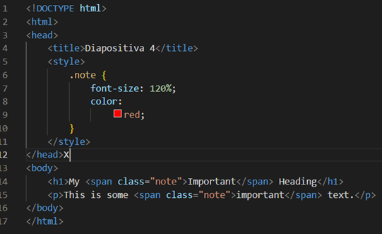

Datos
La primer practica fue para poner nuestros datos en un archivo HTML
Como se puede observar aqui se utiliza la etiqueta "title" para ponerle nombre
como se muestra a
continuación:
En la etiqueta "body" va el contenido del progrma y se utiliza la etiqueta "br"
para dar un salto de
linea como se muestra a continuación:
En el siguiente link podra ver el ejemplo
Casa
La segunda practica fue realizar una casa en html

Se utilizo la etiqueta "style" para darle la forma y el formato a las figuras
Como se muestra a continuación:
Mas texto
En el siguiente link podra ver el ejemplo
Practicas 1 a 8
Practica 1/8
La tercera practica fue darle titulo a la pagina y poner contenido.
En esta practica se usan las etiquetas "TITLE" y "BODY"
como se muestra a continuación:
En el siguiente link podra ver el ejemplo
Practica 2/8
La cuarta practica ver los distintos tipos de letra utilizando
las diferentes etiquetas desde las "h1" hasta la "h6"
En esta practica se usan las etiquetas "h1" a la "h6", "hr" y "br"
como se muestra a continuación:
En el siguiente link podra ver el ejemplo
Practica 3/8
La quinta practica ver los distintos tipos de letra utilizando
las diferentes etiquetas desde las "h1" hasta la "h6"
En esta practica se usan las etiquetas "h1" a la "h6", "hr" y "br"
como se muestra a continuación:
En el siguiente link podra ver el ejemplo
Practica 4/8
La sexta practica se utiliza la etiqueta "MENU" y "ADDRESS"
En esta practica se usan las etiquetas de la practica enterior
En el siguiente link podra ver el ejemplo
Practica 5/8
La septima practica se se realiza el archivo "CSS" donde se le dara
el estilo de la pagina
A continuación se muestra que el fondo que tiene es de color azul y el titulo principal es rojo y esta centrado
Practica 6/8
La octava practica se utiliza la etiqueta "MENU"
Al posicionar el puntero sobre los links en la esquina inferior izquierda
se muestra lo que contienen
Practica 7/8
La novena practica se utiliza lang="fr", lo que indica que el idioma principal del contenido del documento es el francés.
Tambien se utiliza la etiqueta "IMG" donde en caso de que no encuentre la imagen saldra un texto
Aqui se visualiza lo que se hace en el codigo:
En el siguiente link podra ver el ejemplo
Practica 8/8
La decima practica este código crea un "div" con un fondo verde y un borde rojo que contiene un párrafo centrado con un
margen y un espaciado de línea personalizados.
A continuación se muestra el resultado
En el siguiente link podra ver la practica:
DIAPOSITIVAS
Diapositiva 1
A continuación se muestra el resultado
En el siguiente link podra ver la practica:
Diapositiva 4
A continuación se muestra el resultado
En el siguiente link podra ver la practica:
Diapositiva 5
A continuación se muestra el resultado
En el siguiente link podra ver la practica:
Diapositiva 6
A continuación se muestra el resultado
En el siguiente link podra ver la practica:
Diapositivas 12,13,14

A continuación se muestra el resultado
En el siguiente link podra ver la practica:
Diapositivas 23, 24 y 25
A continuación se muestra el resultado

En el siguiente link podra ver la practica:
Diapositiva 38
A continuación se muestra el resultado
En el siguiente link podra ver la practica:
Diapositiva 39
Este codigo se utilizo para realizar la practica de la diapositiva 38
EXAMENES (Pagina dental)
Examen YAIR
Texto
Mas texto
En el siguiente link podra ver el ejemplo
Examen ALEXIS
Texto
Mas texto
En el siguiente link podra ver el ejemplo
Examen JESUS
Texto
Mas texto
En el siguiente link podra ver el ejemplo
--Conclusion--
Evolución de las aplicaciones web:
Este tema abarca la evolución histórica de las aplicaciones web,
desde las páginas estáticas hasta las aplicaciones web interactivas y dinámicas.
Se exploran avances tecnológicos como AJAX, frameworks de desarrollo web y
arquitecturas de aplicaciones modernas.
Arquitectura de las aplicaciones web:
Se refiere a la estructura y organización de una aplicación web.
Se pueden utilizar diferentes arquitecturas, como el modelo cliente-servidor,
donde el cliente solicita recursos al servidor;
y la arquitectura de tres capas, que separa la lógica de presentación,
la lógica de negocio y la gestión de datos.
Tecnologías para el desarrollo de aplicaciones web:
En este tema se presentan las tecnologías y herramientas comunes utilizadas
en el desarrollo de aplicaciones web.
Esto puede incluir lenguajes de programación como HTML, CSS y JavaScript,
así como frameworks y bibliotecas populares como Angular, React y Vue.js.
Planificación de aplicaciones web:
Se refiere al proceso de planificación y diseño de una aplicación web antes de comenzar su desarrollo.
Esto implica identificar requisitos, definir funcionalidades, establecer objetivos,
crear diagramas de flujo y prototipos, y considerar aspectos como la usabilidad y la experiencia del usuario.
HTML, XML y CSS:
Estos son lenguajes de marcado utilizados para crear y dar formato a páginas web.
HTML (HyperText Markup Language) se utiliza para estructurar y presentar el contenido.
XML (eXtensible Markup Language) es un lenguaje flexible para el almacenamiento y
transporte de datos estructurados.
CSS (Cascading Style Sheets) se utiliza para aplicar estilos y diseños a los elementos HTML.
Estructura global de un documento web:
Se refiere a la estructura básica de un documento HTML, que consta de elementos como "<html>",
"<head>" y "<body>".
También incluye elementos adicionales como encabezados, párrafos, imágenes, enlaces y
otros elementos que componen el contenido de la página web.
Elementos básicos: texto, vínculos, listas, tablas, objetos, imágenes y aplicaciones:
Estos elementos son componentes comunes en la construcción de páginas web.
El texto se utiliza para proporcionar información y contenido.
Los vínculos (<a>) se utilizan para crear enlaces a otras páginas o recursos.
Las listas (<ul>, <ol>) se utilizan para organizar elementos en forma de lista.
Las tablas (<table>) se utilizan para mostrar datos en filas y columnas.
Los objetos, imágenes y aplicaciones se insertan en la página web utilizando elementos específicos.
Formularios:
Los formularios se utilizan para recopilar información del usuario.
Se crean utilizando la etiqueta "<form>" y contienen elementos de entrada,
como campos de texto, casillas de verificación, botones y menús desplegables.
Los datos ingresados en un formulario se pueden enviar al servidor para su procesamiento.
Lenguajes de presentación en documentos web:
Además de HTML y CSS, existen otros lenguajes de presentación utilizados en documentos web, como JavaScript,
que se utiliza para agregar interactividad y funcionalidad a las páginas web, y SVG (Scalable Vector Graphics),
que se utiliza para crear gráficos vectoriales escalables en la web.
Selectores y modelo de caja:
Los selectores son parte de CSS y se utilizan para seleccionar elementos HTML y aplicarles estilos específicos.
El modelo de caja se refiere a cómo se representa cada elemento HTML en la página,
considerando su contenido, margen, borde y relleno.